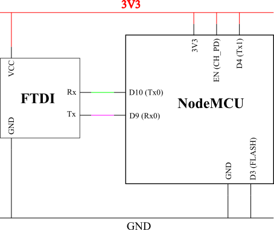

ESP8266 & ESP32¶
- Liens_Web:
ESP8266¶
- Liens_Web:
PINOUT¶
- NodeMCU:

- Wemos_D1_mini:

Flasher un nouveau Firmware¶
La façon simple (quant tous vas bien)¶
Pour flasher un firmware sur le NodeMCU, il faut le mettre en mode « flashage » en reliant le GPIO 0 (D3) au GND. Il faut alors suivre les étape de « MAJ du firmware ».
- /!\Attention/!\:
cette broche ne peux / doit pas être utilisée dans un montage.
La façon compliqué (quant ça merde)¶
- FTDI_NodeMCU:
- 
{kind=link}
Ce schéma a été élaboré à partir de différent schéma trouvés sur internet. Cette configuration est la seul qui ai fonctionné. il permet de flasher un ESP8266 à l’aide d’un FTDI232 sans passer par le CH340
- /!\_Attention_/!\:
L’ESP8266 fonctionnant uniquement en 3.3v, il faut configurer le FTDI en 3.3v
Le Rx du FTDI doit être connecté au Tx0 de l’ESP et le Tx du FTDI doit être connecté sur le Rx0 de l’ESP
Sur l’ESP, le Tx1 doit être relié à VCC pour qu’il soit neutralisé et qu’il ne perturbe pas l’ESP durant la communication entre le FTDI et l’ESP
Compilier un firmware personalisé¶
- Liens_Web:
Build Firmware [3] : l’ESP SDK au travers d’une VM VirtualBox ou Vagrant
esp-open-sdk [4] : Installer et compiler le SDK sans VM
Frozen Modules [5] : Pour compiler des modules directement dans le firmware
Dans certain cas les modules importés occupes trop de place (ex: le module mqtt_as qui permet d’utiliser mqtt avec asyncio). Il est alors nécessaire de compiler le module dans un firmware personalisé. C’est particulièrement vrai avec l’ESP8266 qui dispose de moin d’espace que l’ESP32.
MAJ du Firmware¶
- Liens_Web:
Téléchargement et installation d’ESPTool
EspTool permet d’effacer l’ESP ou d’y téléverser un nouveau Fimware. Par défaut, la cible est l’ESP8266. Pour sélectionner un autre composant (comme l’ESP32), il faut consulter la documentation
Il peut être installer directement avec pip :
pip install esptoolOu peut être utiliser directement si on récupère de le dépôt et que l’on travail depuis le dossier extrait à partir de l’archive.
Récupérer le binaire à téléverser
Par défaut le firmware installer dans le NodeMCU est en LUA. Il est possible de mettre un firmaware MicroPython.
- N.B: La programmation de l’ESP depuis l’IDE Arduino écrase le firmware présent dans
l’ESP pour mettre le siens à la place.
Firmware original (LUA)
Firmware MicroPython
- Liens_Web:
Programmer l’ESP depuis l’IDE Arduino
- Liens_Web:
- https://www.fais-le-toi-meme.fr/fr/electronique/tutoriel/programmes-arduino-executes-sur-esp8266-arduino-ide
# Page (FR) expliquant comment configurer l’IDE Arduino pour pouvoir programmer l’ESP
Déployer un nouveau Firmware
- Liens_Web:
- http://docs.micropython.org/en/latest/esp8266/esp8266/tutorial/intro.html
# Procédure complète pour déployer un nouveau Firmware depuis esptool
Rappel : Identifier les ports COM utilisés
Sous Windows :
'Gestion de l'ordinateur\Gestionnaire de péripérique\Ports (COM et LPT)'Sous Linux :
ls /dev/ttyUSB*Ecraser la flash
esptool.py --port /dev/ttyUSB0 erase_flash # example sous linuxDéployer le nouveau Firmware
esptool.py --port /dev/ttyUSB0 --baud 460800 write_flash --flash_size=detect -fm dio 0 esp8266-20170108-v1.8.7.bin # L'ESP supporte bien un baurate de 460800 pour le déploement du Firmware
OSError: [Errno 2] ENOENT: main.py¶
Après avoir flasher le firmware, on peut avoir le message d’erreur :
OSError: [Errno 2] ENOENT: main.py
Se message apparait lors de la connexion au terminal série (en REPL). Il n’est alors plus possible d’interagir avec le micro-contrôler.
Ce message vient du faite que lors du déploiement du firmware, le fichier “main.py” n’est pas créer.
Pour corriger ce problème il faut soit le créer soit le copier à partir de l’utilitaire python “RSHELL”
Utilisation avec MicroPython¶
- Liens_Web:
- http://docs.micropython.org/en/latest/esp8266/esp8266/tutorial/index.html
# Guide / Tutorial de prise en main de MicroPython sur ESP8266
- http://docs.micropython.org/en/latest/pyboard/genrst/index.html
# Différence entre CPython et MicroPython
- INFOS:
Micropython n’est pas très évolué. Il ne supporte pas les Class ou les scripts trop complexes
L’ESP8266, n’a pas de coprocesseur Arithmétique. Les opération mathématiques complexe ou avancées ne sont pas possibles
WEMOS D1 Mini avec Arduino¶
Installation de la carte dans l’IDE Arduino¶
- Liens_Web:
- http://www.wikidebrouillard.org/index.php?title=Wemos_D1_mini
# Un pas à pas en image et en fr
Installer l’utilitaire de gestion de fichiers (zone SPIFFS)¶
- Liens_Web:
- https://github.com/esp8266/arduino-esp8266fs-plugin
# Package + instructions d’installation
- https://www.instructables.com/id/Using-ESP8266-SPIFFS/
# Pas à pas d’installation de esp8266fs
Utilisation du système de fichiers (FS)¶
Créer dans le dossier contenant le fichier “.ino” un sous dossier “data”
Mettre les fichiers devant être téléverser dans le FS dans le dossier data :
.\data\index.htmlOuvrir le sketch devant être téléverser
Depuis le menu “Outils”, sélectionner “ESP8266 Sketch Data Upload”. Attention, pas de confirmation, téléversement direct.
/!\ Attention /!\ : Il faut fermer la console série pendant le téléversement des fichiers sinon l’opération échoue.
ESP32¶
PINOUT¶
- Wemos_mini_ESP32:

Broches spécialles¶
GPIO2 : Led interne
Pins 1 and 3 are REPL UART TX and RX respectively
Pin 21 : I2C SDA
Pin 22 : I2C SCL
Pins 6, 7, 8, 11, 16, and 17 are used for connecting the embedded flash, and are not recommended for other uses
Pins 34-39 are input only, and also do not have internal pull-up resistors. The pull value of some pins can be set to Pin.PULL_HOLD to reduce power consumption during deepsleep.
GPIO0 : Ne pas utiliser car elle empêche le démarrage.
RSHELL¶
- Liens_Web:
- https://wiki.mchobby.be/index.php?title=MicroPython-Hack-RShell#RShell_sur_ESP8266
# démonstration et explication
- https://github.com/dhylands/rshell
# Dépôt officiel
- Définissions:
RShell est un simple shell qui est exécuté sur un hôte et utilise le more raw-REPL de Micropython pour envoyer des commandes vers une carte micro python.
Cela permet:
d’obtenir des informations sur le système de fichier
de transférer des fichiers vers ou depuis la carte
d’établir une session REPL.
Comme il est possible d’invoquer REPL, RShell peut également être utilisé comme un émulateur terminal.
Installation et démarrage¶
RSHELL est un programme python :
pip install rshell
Ouvrir une session¶
- /!\Attention/!\:
Sur un ESP8266, il est impératif de réduire la taille du buffer à 128 octets pour le pas écraser le système de fichier.
L’ouverture de session se fait avec la commande suivante :
# Linux
rshell --port /dev/ttyUSB0 --baud 115200 --buffer-size 128 --editor nano
# Windows
# sous Windows, il est inutle de préciser l'éditeur car il n'y en as pas d'utilisable en ligne
# de commande.
rshell --port COM3 --baud 115200 --buffer-size 128
Utilisation¶
help : pour obtenir la liste des commandes :
Documented commands (type help <topic>): ======================================== args cat connect echo exit filetype ls repl rsync boards cd cp edit filesize help mkdir rm shell
Accéder au système de fichier de la carte¶
Pour accéder au système de fichier :
/pyboard ex: ls -l /pyboardPour accéder à la flash :
# (Non testé) /flashPour accéder à la carte sd :
# (Non testé) /sdcard
Créer un fichier¶
- Liens_Web:
Avertissement
Il ne s’agit pas d’un vrai système de fichier. Il n’est donc pas possible de naviger dans un dossier depuis un programme. Il s’agit en réalité d’un renommage du fichier :
# pour le fichier 'truc.txt' dans le dossier 'machin' le fichier sera renommer en : '/machin/truc.txt'
Se connecter au REPL :
repl Entering REPL. Use Control-X to exit. > MicroPython v1.10-8-g8b7039d7d on 2019-01-26; ESP module with ESP8266 Type "help()" for more information. >>> >>>Connaitre la liste des modules natifs :
>>> help('modules') __main__ machine ubinascii ure _boot math ucollections urequests _onewire micropython ucryptolib urllib/urequest _uasyncio neopixel uctypes uselect _webrepl network uerrno usocket apa102 ntptime uhashlib ussl btree onewire uheapq ustruct builtins port_diag uio usys dht ssd1306 ujson utime ds18x20 uarray umqtt/robust utimeq esp uasyncio/__init__ umqtt/simple uwebsocket flashbdev uasyncio/core uos uzlib framebuf uasyncio/event upip webrepl gc uasyncio/funcs upip_utarfile webrepl_setup inisetup uasyncio/lock upysh websocket_helper lwip uasyncio/stream urandom Plus any modules on the filesystem >>>Créer simplement le fichier en python :
>>> fileName = "main.py" >>> f = open(fileName, "w+") >>> f.write("# main.py") 9 >>> f.close()Vérifier que le fichier à bien été créer :
ls -l /pyboard 230 Dec 31 1999 boot.py 9 Apr 6 19:23 main.pyConsulter le contenu d’un fichier :
cat /pyboard/main.py # main.py
Copier un fichier local sur la carte¶
cp main.py /pyboard
REPL, WebREPL et File System¶
Il est possible d’interagir directement avec l’ESP. Soit depuis le port série, c’est le REPL. Soit au travers d’un WebSocket, c’est le WebREPL. Le deux modes renvoie la même console d’interprétation Python.
N.B: Une fois dans la console Python, il faut tapez “help()” pour connaitre les opérations spécifiques applicable à MicroPython et à LESP8266.
- REPL:
Accessible depuis un terminal sur le port COM de l’ESP avec un Baudrate de 115200
- WebREPL:
Activer le WebREPL au démarrage:
# Depuis le REPL (terminal serie) >>>import webrepl_setup --> 'E' pour activer le WebREPL au démarrage --> saisir et confirmer un mot de passeAccessible depuis un navigateur Web. Le Wifi doit au préalable avoir été configuré depuis le REPL. Il est accessible depuis l’url : http://micropython.org/webrepl/. Le WebSocket associé se présente sous la forme suivante :
ws://<Adresse_ip>:8266 ex: ws://192.168.1.26:8266- File_System_(FS):
Un système de fichier est présent dans MicroPython. Il permet de déposer des fichiers (en “.py” par exemple) qui seront Exécutés / consultés après la fin de la séquence de démarrage.
boot.py: C’est un fichier obligatoire qui est créer automatiquement. Il est possible de le modifier, mais ce n’est pas conseiller. Ce fichier est le premier qui sera exécuté au démarrage de l’ESP.
main.py: Ce fichier sera appeler automatiquement par “boot.py” si il existe. Il n’est pas obligatoire si on utilise l’ESP manuellement (seulement depuis la console python).
Adafruit a créer un CLI permettant de déposer et récupérer des fichiers dans le FS au travers de la liaison série : https://github.com/adafruit/ampy
Micropython¶
Library¶
- micropython-lib:
micropython-lib is a project to develop a non-monolothic standard library for « advanced » MicroPython fork (https://github.com/pfalcon/micropython). Each module or package is available as a separate distribution package from PyPI.
- Liens_Web:
- umqtt.simple:
umqtt is a simple MQTT client for MicroPython. (Note that it uses some MicroPython shortcuts and doesn’t work with CPython).
- Liens_Web:
- Documentation:
- uasyncio:
uasyncio is MicroPython’s asynchronous sheduling library, roughly modeled after CPython’s asyncio.
- mqtt_as:
MicroPython Asynchronous MQTT (umqtt + uasyncio en un seul module)